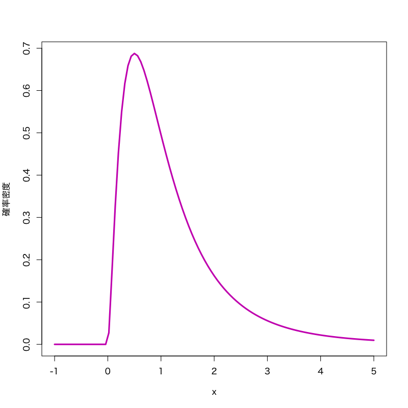

正規分布に基づく検定
確率・統計 - 講義13
(Press ? for help, n and p for next and previous slide)
前回のおさらい
- 統計的仮説検定
- 検定の手続き
- 帰無仮説と対立仮説
- 有意水準，棄却域，\(p\)-値
- 過誤と検出力
- 両側検定と片側検定
- 正規分布を用いた検定
- 平均値の差の検定
- 平均値の検定
統計的仮説検定
- ある現象・母集団に対して仮定された仮説の真偽を データに基づいて統計的に検証する方法
- 推定と大きく異なるのは， 母集団の分布に対して何らかの仮説を考えるところ
検定における仮説
帰無仮説 \(H_0\)
検定統計量の分布を予想するために立てる仮説
対立仮説 \(H_1\)
“帰無仮説が誤っているときに起こりうるシナリオ”として想定する仮説
検定の基本的手続き
- 仮説を立てる
- 仮説のもとで 検定統計量 が従う 帰無分布 を調べる
- 実際のデータから検定統計量の値を計算する
- 計算された検定統計量の値が
仮説が正しいときに十分高い確率で
得られるかどうかを判断する
- 棄却域 を用いる方法
- \(p\)-値 を計算する方法
検定の用語
- 仮説の判定
- 帰無仮説を 棄却: 帰無仮説は誤っていると判断すること
- 帰無仮説を 受容: 帰無仮説を積極的に棄却できないこと
- 検定の誤り
- 第一種過誤: “正しい帰無仮説を棄却する” 誤り
- 第二種過誤: “誤った帰無仮説を受容する” 誤り
- 検定の設計
- サイズ: “第一種過誤が起きる確率” を小さく
- 検出力: “第二種過誤が起きない確率” を大きく
有意水準と\(p\)-値
有意水準
第一種過誤が起きる確率(サイズ)として許容する上限
\(p\)-値 (有意確率): (検定統計量 \(T\), 棄却域 \(R_{\alpha}\))
検定統計量の値が棄却域に含まれる有意水準の最小値
\begin{equation} \text{(\(p\)-値)} =\min\{\alpha\in(0,1)|\text{\(T\) が\(R_{\alpha}\)に含まれる}\} \end{equation}有意水準と \(p\)-値の関係
\(p\)-値が有意水準未満のときに帰無仮説を棄却する
正規分布を用いた平均値の検定
問題
確率変数列の平均値が \(\mu\) と等しいか検定せよ．
\begin{equation} X_1,X_2,\dotsc,X_n \end{equation}検定問題
\begin{equation} X_i=\theta+\varepsilon_{i}, \quad i=1,\dotsc,n \qquad \varepsilon_{i}\sim\mathcal{N}(0,\sigma^{2}) \end{equation}を観測値の確率モデル (\(\sigma^{2}\) は既知) とするとき
\begin{equation} H_{0}: \theta=\mu \quad\text{vs}\quad H_{1}: \theta\not=\mu \end{equation}
検定統計量
\begin{equation} T=\frac{\sqrt{n}(\bar{X}-\mu)}{\sigma} \end{equation}は 帰無仮説が正しいとき標準正規分布に従う．
棄却域 (両側検定の場合)
\begin{equation} R_{\alpha} = \left(-\infty,-z_{1{-}\alpha/2}\right) \cup \left(z_{1{-}\alpha/2},\infty\right) \end{equation}
正規分布を用いた平均値の差の検定
問題
2つの確率変数列の平均値が等しいか検定せよ．
\begin{equation} X_1,X_2,\dotsc,X_n, \qquad Y_1,Y_2,\dotsc,Y_m \end{equation}検定問題
\begin{align} X_i&=\theta_{1}+\varepsilon_{1i}, \quad i=1,\dotsc,n \qquad \varepsilon_{1i}\sim\mathcal{N}(0,\sigma^{2})\\ Y_j&=\theta_{2}+\varepsilon_{2j}, \quad j=1,\dotsc,m \qquad \varepsilon_{2j}\sim\mathcal{N}(0,\sigma^{2}) \end{align}を観測値の確率モデル (\(\sigma^{2}\) は既知) とするとき
\begin{equation} H_{0}: \theta_{1}=\theta_{2} \quad\text{vs}\quad H_{1}: \theta_{1}\not=\theta_{2} \end{equation}
検定統計量
\begin{equation} T=\sqrt{\frac{nm}{n+m}}\frac{\bar{X}-\bar{Y}}{\sigma} \end{equation}は仮説が正しいとき標準正規分布に従う．
棄却域 (両側検定の場合)
\begin{equation} R_{\alpha} = \left(-\infty,-z_{1{-}\alpha/2}\right) \cup \left(z_{1{-}\alpha/2},\infty\right) \end{equation}
両側検定と片側検定
- 対立仮説によって棄却域の形は変わりうる
- 2つの薬の治験結果に対する仮説:
- 古い薬(高価)と新しい薬(安価)の効能が変わらない
- 古い薬に比べて新しい薬の効能が改善した
両側検定:
棄却域がある定数 \(a < b\) によって
\begin{equation} (-\infty,a)\cup(b,\infty) \end{equation}片側検定
棄却域がある定数 \(a\) によって
\begin{align} &(a,\infty)&&\text{(右片側検定)}\\ &(-\infty,a)&&\text{(左片側検定)} \end{align}
- 2つの薬の治験結果に対する仮説:


演習
練習問題
以下の問に答えよ．
学生 30 人に， 一週間の昼食代を尋ねたところ， 平均 3280 円，標準偏差 950 円であることがわかった． 昼食代は正規分布に従い， 上記の標準偏差は正確に求められているとする．
このとき， 学生の平均的な一週間の昼食代は 3000 円より高いと言えるかを 有意水準 0.05 で考えなさい．
- \(z_{0.95}=1.64, z_{0.975}=1.96\)
解答例
検定統計量
\begin{equation} T=\frac{\sqrt{n}(\bar{X}-\mu)}{\sigma} \end{equation}棄却域 (有意水準 \(\alpha=0.05\) の右片側検定)
\begin{equation} R_{\alpha} = \left(z_{0.95},\infty\right) = \left(1.64,\infty\right) \end{equation}
観測データ
\(n=30\), \(\bar{X}=3280\), \(\mu=3000\), \(\sigma=950\)
検定統計量の計算
\begin{equation} T =\frac{\sqrt{30}(3280-3000)}{950} =1.614 \end{equation}検定の結果
平均3000円という帰無仮説は棄却されない
(帰無仮説を受容)
練習問題
- 前問において\(p\)-値を計算する方法を考えよ．
解答例
\(p\)-値 (有意確率) の定義
検定統計量の値が棄却域に含まれる有意水準の最小値
\begin{equation} \text{(\(p\)-値)} =\min\{\alpha\in(0,1)|\text{\(T\) が\(R_{\alpha}\)に含まれる}\} \end{equation}
両側検定の場合
観測データに対する検定統計量の値を \(t\) とする
\begin{equation} \text{(\(p\)-値)} =2\int_{|t|}^\infty f(x)dx \end{equation}- \(f(x)\) は検定統計量 \(T\) の帰無分布(標準正規分布)の密度関数
\(p\)-値と有意水準 \(\alpha\) の関係
\begin{align} &|t|>z_{1{-}\alpha/2}\\ &\Leftrightarrow \int_{-\infty}^{|t|}f(x)dx >\int_{-\infty}^{z_{1{-}\alpha/2}}f(x)dx=1{-}\alpha/2\\ &\Leftrightarrow \text{(\(p\)-値)} =2\int_{|t|}^\infty f(x)dx < \alpha \end{align}\(p\)-値が \(\alpha\) 未満なら帰無仮説を棄却すればよい
右片側検定の場合
\begin{equation} \text{(\(p\)-値)}= \int_{t}^\infty f(x)dx \end{equation}左片側検定の場合
\begin{equation} \text{(\(p\)-値)}= \int_{-\infty}^{t} f(x)dx \end{equation}
右片側検定で \(t=1.614\)
\begin{equation} \text{(\(p\)-値)} = \int_{1.614}^\infty f(x)dx =0.0532 \end{equation}
平均に関する検定
観測値の仮定
確率モデル
\begin{equation} X=\mu+\varepsilon, \qquad \varepsilon\sim\mathcal{N}(0,\sigma^{2}) \end{equation}\begin{equation} X\sim\mathcal{N}(\mu,\sigma^{2}) \end{equation}- \(\sigma^{2}\) が未知の場合を考える
平均の検定
問題
\(\mu_0\) を既知の定数として， 平均 \(\mu\) が真の平均 \(\mu_0\) であるか否かを検定する
\begin{equation} H_0:\mu=\mu_0\quad\text{vs}\quad H_1:\mu\neq\mu_0 \end{equation}
考え方
- 平均と分散の推定量の性質
標本平均: (正規分布に従う)
\begin{equation} \bar{X}=\frac{1}{n}\sum_{i=1}^nX_i \end{equation}不偏分散: (\(\chi^{2}\)-分布(の定数倍)に従う)
\begin{equation} s^{2}=\frac{1}{n{-}1}\sum_{i=1}^n(X_i-\bar{X})^{2} \end{equation}- 標本平均と不偏分散は互いに独立
\(\chi^{2}\)-分布

Figure 1: \(\chi^{2}\)-分布 (自由度\(3\))
- 見本空間: \([0,\infty)\)
- 母数: 自由度 \(\nu\)
密度関数:
\begin{multline} f(x)= \frac{1}{2^{\nu/2}\Gamma(\frac{\nu}{2})}x^{\nu/2-1}e^{-x/2}\\ \Gamma(z)=\int_0^\infty e^{-t}t^{z-1}dt \end{multline}
- 備考: \(\nu\) 個の標準正規分布の2乗和の分布 で， 検定に利用される．
\(t\)-分布

Figure 2: \(t\)-分布 (自由度\(3\))
- 見本空間: \((-\infty,\infty)\)
- 母数: 自由度 \(\nu\)
密度関数:
\begin{equation} f(x)= \frac{\Gamma\left(\frac{\nu+1}{2}\right)} {\sqrt{\nu\pi}\;\Gamma\left(\frac{\nu}{2}\right)} \left(1+\frac{x^{2}}{\nu}\right)^{-\frac{1}{2}(\nu+1)} \end{equation}
- 備考: 標準正規分布と 自由度 \(\nu\) の \(\chi^{2}\)-分布の比の分布 で， 検定に利用される．
Student の \(t\)-検定
検定統計量
\begin{equation} T=\frac{\sqrt{n}(\bar{X}-\mu_0)}{s} \end{equation}- 帰無分布は自由度 \(n{-}1\) の \(t\)-分布
- \(\sqrt{n}(\bar{X}-\mu_0)/\sigma\) は標準正規分布に従う
- \((n{-}1)s^2/\sigma^{2}\) は自由度 \(n{-}1\) の\(\chi^{2}\)-分布に従う
両側検定 (有意水準: \(\alpha\))
\(t_{1{-}\alpha/2}(n{-}1)\) :
自由度 \(n{-}1\) の \(t\)-分布の \(1{-}\alpha/2\) 分位点
棄却域:
\begin{equation} R_{\alpha}= \left(-\infty,-t_{1{-}\alpha/2}(n{-}1)\right) \cup\left(t_{1{-}\alpha/2}(n{-}1),\infty\right) \end{equation}
平均の差の検定
問題
2種類のデータの平均が等しいか否かを検定する
\begin{equation} H_0:\mu_1=\mu_2\quad\text{vs}\quad H_1:\mu_1\neq\mu_2 \end{equation}- Behrens-Fisher 問題
- 正確かつ適切な検定を導出することは実は難しい
考え方
- 標本平均と不偏分散の性質:
\(X_1,\dotsc,X_m\) および \(Y_1,\dotsc,Y_m\) の不偏分散:
\begin{equation} s_1^{2}=\frac{1}{m{-}1}\sum_{i=1}^m(X_i-\bar{X})^{2},\quad s_2^{2}=\frac{1}{n{-}1}\sum_{i=1}^n(Y_i-\bar{Y})^{2}. \end{equation}- \(\bar{X}-\bar{Y},s_1^{2},s_2^{2}\) は互いに独立
- \((m{-}1)s_1^{2}/\sigma_1^{2}\) は自由度 \(m{-}1\) の \(\chi^{2}\)-分布に従う
- \((n{-}1)s_2^{2}/\sigma_2^{2}\) は自由度 \(n{-}1\) の \(\chi^{2}\)-分布に従う
Welch の \(t\)-検定
検定統計量
\begin{equation} T=\frac{\bar{X}-\bar{Y}}{\sqrt{s_1^{2}/m+s_2^{2}/n}} \end{equation}帰無分布は自由度 \(\hat{\nu}\) の \(t\)-分布 (Welch の近似)
\begin{equation} \hat{\nu} =\frac{(s_1^{2}/m+s_2^{2}/n)^{2}} {(s_1^{2}/m)^{2}/(m{-}1)+(s_2^{2}/n)^{2}/(n{-}1)} \end{equation}
両側検定 (有意水準: \(\alpha\))
\(t_{1{-}\alpha/2}(\hat{\nu})\) :
自由度 \(\hat{\nu}\) の \(t\)-分布の \(1{-}\alpha/2\) 分位点
棄却域:
\begin{equation} R_{\alpha}= \left(-\infty,-t_{1{-}\alpha/2}(\hat{\nu})\right) \cup\left(t_{1{-}\alpha/2}(\hat{\nu}),\infty\right) \end{equation}
演習
練習問題
- Welch の\(t\)-検定において \(p\)-値はどのように計算すればよいか述べよ．
解答例
検定統計量 \(T\) の帰無分布を自由度 \(\nu\)
\begin{equation} \hat{\nu} =\frac{(s_1^{2}/m+s_2^{2}/n)^{2}} {(s_1^{2}/m)^{2}/(m{-}1)+(s_2^{2}/n)^{2}/(n{-}1)} \end{equation}の \(t\)-分布で近似する(この密度関数を\(f\)とする)
両側検定の場合
観測データに対する検定統計量の値を \(t\) とする
\begin{equation} \text{(\(p\)-値)} =2\int_{|t|}^\infty f(x)dx \end{equation}
右片側検定の場合
\begin{equation} \text{(\(p\)-値)}= \int_{t}^\infty f(x)dx \end{equation}左片側検定の場合
\begin{equation} \text{(\(p\)-値)}= \int_{-\infty}^{t} f(x)dx \end{equation}
分散に関する検定
分散の検定
問題
\(\sigma_0^{2}\) を既知の定数として， 分散 \(\sigma^{2}\) が \(\sigma_0^{2}\) であるか否かを検定する
\begin{equation} H_0:\sigma^{2}=\sigma_0^{2}\quad\text{vs}\quad H_1:\sigma^{2}\neq\sigma_0^{2} \end{equation}
考え方
- 分散の推定量の性質:
不偏分散: (\(\chi^{2}\)-分布に従う)
\begin{equation} s^{2}=\frac{1}{n{-}1}\sum_{i=1}^n(X_i-\bar{X})^{2} \end{equation}
\(\chi^{2}\)-検定
検定統計量:
\begin{equation} \chi^{2}=\frac{(n{-}1)s^{2}}{\sigma_0^{2}} \end{equation}- 帰無分布は自由度 \(n{-}1\) の \(\chi^{2}\)-分布
両側検定 (有意水準: \(\alpha\))
\(\chi^{2}_{\alpha/2}(n{-}1)\), \(\chi^{2}_{1{-}\alpha/2}(n{-}1)\) :
自由度 \(n{-}1\) の \(\chi^{2}\)-分布の \(\alpha/2\), \(1{-}\alpha/2\) 分位点
棄却域:
\begin{equation} R_{\alpha}= \left(0,\chi^{2}_{\alpha/2}(n{-}1)\right) \cup\left(\chi^{2}_{1{-}\alpha/2}(n{-}1),\infty\right) \end{equation}
分散の比の検定
問題
2種類のデータの分散が等しいか否かを検定する
\begin{equation} H_0:\sigma_1^{2}=\sigma_2^{2}\quad\text{vs}\quad H_1:\sigma_1^{2}\neq\sigma_2^{2} \end{equation}
考え方
- 不偏分散の性質:
\(X_1,\dotsc,X_m\) および \(Y_1,\dotsc,Y_n\) の不偏分散:
\begin{equation} s_1^{2}=\frac{1}{m{-}1}\sum_{i=1}^m(X_i-\bar{X})^{2},\quad s_2^{2}=\frac{1}{n{-}1}\sum_{i=1}^n(Y_i-\bar{Y})^{2}. \end{equation}- \(s_1^{2},s_2^{2}\) は互いに独立
- \((m{-}1)s_1^{2}/\sigma_1^{2}\) 自由度 \(m{-}1\) の \(\chi^{2}\)-分布に従う
- \((n{-}1)s_2^{2}/\sigma_2^{2}\) は自由度 \(n{-}1\) の \(\chi^{2}\)-分布に従う
\(F\)-分布

Figure 3: \(F\)-分布 (自由度\(5,10\))
- 見本空間: \([0,\infty)\)
- 母数: 自由度 \(\nu_{1},\nu_{2}\)
密度関数:
\begin{multline} f(x)= \frac{(\frac{\nu_{1}}{\nu_{2}})^{\frac{\nu_{1}}{2}}}{B(\frac{\nu_{1}}{2},\frac{\nu_{2}}{2})} \frac{x^{\frac{\nu_{1}}{2}-1}}{(1+\frac{\nu_{1}}{\nu_{2}}x)^{\frac{\nu_{1}+\nu_{2}}{2}}}\\ B(x,y)=\int_{0}^{1}t^{x-1}(1-t)^{y-1}dt \end{multline}
- 備考: \(\nu_{1},\nu_{2}\) 個の標準正規分布の2乗和の比の分布 で， 検定に利用される．
\(F\)-検定
検定統計量:
\begin{equation} F=\frac{s_1^{2}}{s_2^{2}} \end{equation}- 帰無分布は自由度 \(m{-}1,n{-}1\) の \(F\)-分布
両側検定 (有意水準: \(\alpha\))
\(F_{\alpha/2}(m{-}1,n{-}1)\), \(F_{1{-}\alpha/2}(m{-}1,n{-}1)\) :
自由度 \(m{-}1,n{-}1\) の \(F\)-分布の \(\alpha/2,\,1{-}\alpha/2\) 分位点
棄却域:
\begin{equation} R_{\alpha}= \left(0,F_{\alpha/2}(m{-}1,n{-}1)\right) \cup\left(F_{1{-}\alpha/2}(m{-}1,n{-}1),\infty\right) \end{equation}
演習
練習問題
以下の問に答えよ．
1年生 40 人と 2年生 35 人に， 年間の書籍代を尋ねたところ， 1年生は平均 13300 円，標準偏差 900 円， 2年生は平均 12800 円，標準偏差 800 円 であることがわかった． 各学年の書籍代は正規分布に従うことがわかっており， 上記の平均，標準偏差は標本平均および不偏分散から求めたものとする．
このとき， 1年生と2年生の平均的な書籍代は同じと言えるかを 有意水準 0.05 で考えなさい．
- \(F_{0.05}(39,34)=0.58, F_{0.025}(39,34)=0.52\), \(F_{0.95}(39,34)=1.74, F_{0.975}(39,34)=1.95\), \(t_{0.95}(73)=1.67, t_{0.975}(73)=1.99\)
解答例
- 分散の比の検定を行う
検定統計量:
\begin{equation} F=\frac{s_1^{2}}{s_2^{2}} \end{equation}- 帰無分布は自由度 \(m{-}1,n{-}1\) の \(F\)-分布
棄却域:
\begin{align} R_{\alpha} &= \left(0,F_{\alpha/2}(m{-}1,n{-}1)\right) \cup\left(F_{1{-}\alpha/2}(m{-}1,n{-}1),\infty\right)\\ &= \left(0,0.52\right) \cup\left(1.95,\infty\right) \end{align}
観測データ
\(m=40\), \(n=35\), \(s_{1}=900\), \(s_{2}=800\)
検定統計量の計算
\begin{equation} F =\frac{900^{2}}{800^{2}} =1.266 \end{equation}検定の結果
分散の比が1であるという帰無仮説は棄却されない
(等分散とみなしてよい)
分散の再計算
\begin{equation} s^{2} = \frac{(m-1)\cdot\sigma_{1}^{2}+(n-1)\cdot\sigma_{2}^{2}}{(m-1)+(n-1)} = 854.9^{2} \end{equation}- \((m+n-2)s^{2}/\sigma^2\) は自由度 \(m+n-2\) の \(\chi^2\)-分布に従う
検定統計量
\begin{equation} T=\sqrt{\frac{nm}{n+m}}\frac{\bar{X}-\bar{Y}}{s} \end{equation}- 自由度 \(m+n-2\) の \(t\)-分布に従う
棄却域 (有意水準 \(\alpha=0.05\) の両側検定)
\begin{align} R_{\alpha} &= \left(-\infty,-t_{0.975}(73)\right) \cup \left(t_{0.975}(73),\infty\right)\\ &= \left(-\infty,-1.99\right) \cup \left(1.99,\infty\right) \end{align}
観測データ
\(m=40\), \(\bar{X}=13300\), \(n=35\), \(\bar{Y}=12800\),
検定統計量の計算
\begin{equation} T =\sqrt{\frac{40\cdot 35}{40+35}} \frac{13300-12800}{854.9} =2.53 \end{equation}検定の結果
平均が同じという帰無仮説は棄却される
今回のまとめ
- 分散未知の正規分布を用いた検定
- 平均値の検定
- 平均値の差の検定
- 分散の検定
- 分散の比の検定